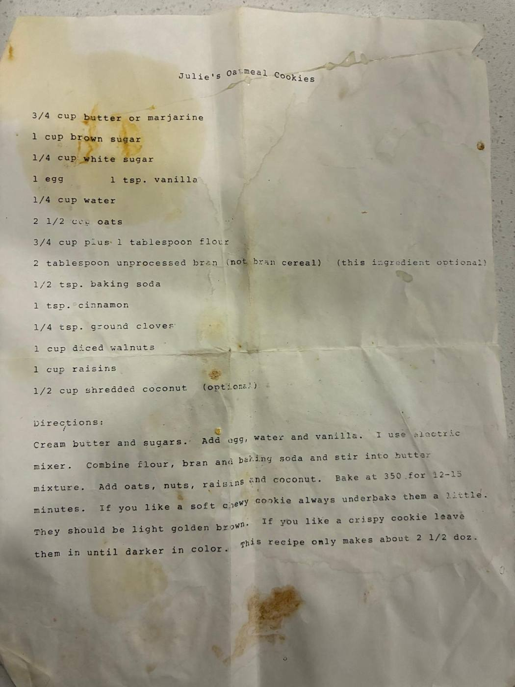

Desserts
Julie's Oatmeal Cookies
From the kitchen of Mom
Oven350°F
Bake12–15 min
Makes2½ dozen

Mom's original card · tap to enlarge
Ingredients
Method tap a step to mark it done
- Cream the butter and sugars (an electric mixer works well).
- Add the egg, water and vanilla.
- Combine the flour, bran, baking soda, cinnamon and cloves, and stir into the butter mixture.
- Add the oats, nuts, raisins and coconut.
- Bake at 350°F for 12–15 minutes, until light golden brown.
Mom’s tips
- If you like a soft, chewy cookie, always underbake them a little — they should be light golden brown. If you like a crispy cookie, leave them in until darker in color.
- This recipe only makes about 2½ dozen.